7 Add or
Subtract?

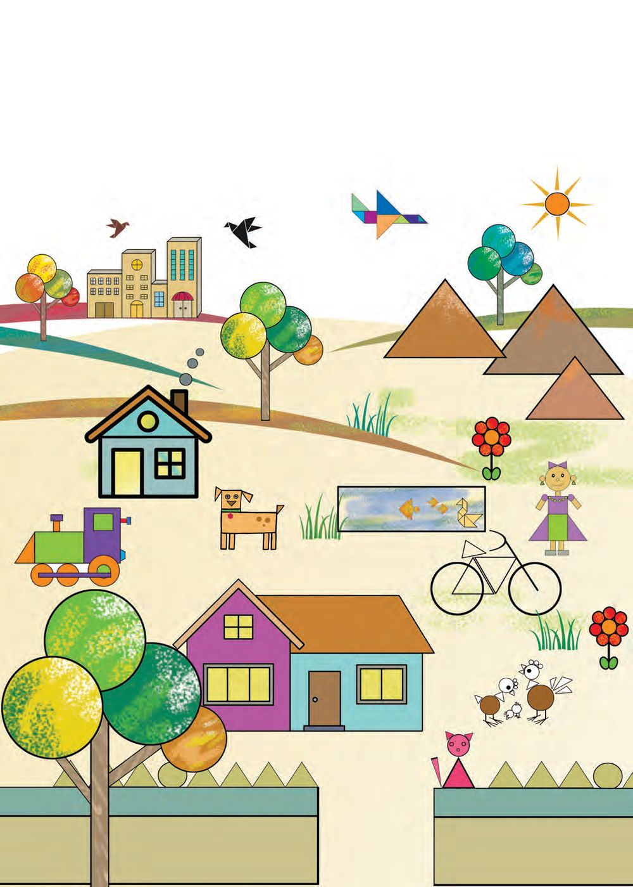
7 Add or
Subtract?

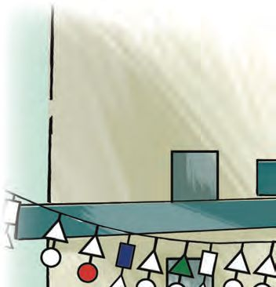
Mathematics Standard - III
Counting Beads
Let's count these 100 beads one by one
Let's fill this bowl
Finished the bead game? Let's fill up this table: Number
Number of beads in hand
1
90
2
75
3 4
Number of beads needed to make 100
20 50
5
1
6
12
7
33
How I calculated:
96

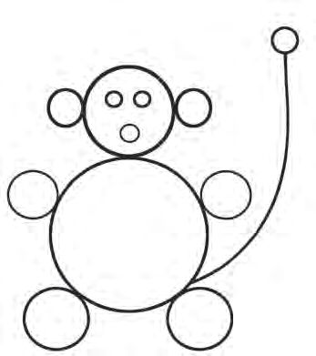
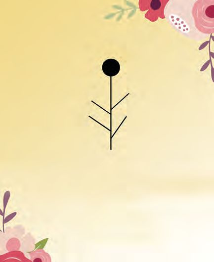
Add or Subtract?
Removing Beads Each kid brought 100 beads for the game. The beads brought by 10 of them were put in a bowl. How many beads are there in the bowl? The teacher removed one bead from the bowl. How many beads are there in the bowl now? How did you calculate?
How many beads are there in the bowl, dear?
From these 999 beads, the teacher gave 111 to each group. Write how many were left each time. 999 – 111
= 888
888 – 111
=
– 111
=
–
=
–
=
–
=
–
=
–
=
–
= 0
How many groups got the beads?
Subtracting a number from itself gives zero
97

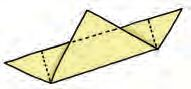
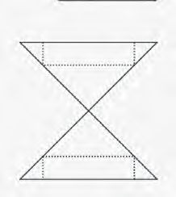
Mathematics Standard - III
When Place Changes What's the number on the abacus?
Hundreds
Tens
Ones
To make it 231, which beads should be removed?
Put the beads in this abacus.
Be careful about the positions!
Write the number you got.
Hundreds Tens
ones
98

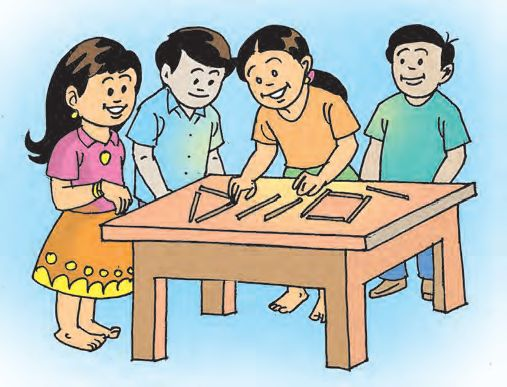
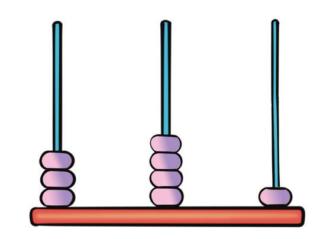
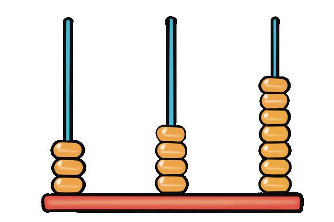
Add or Subtract?
Numbers on the Abacus What's the number on the abacus? If we remove one bead from the hundreds place, what number do we get? Hundreds
Tens
Ones
Now remove two beads from the ten's place. Which number do you get? Suppose we remove four beads from the one's place, what number do we get? How does the abacus look now? Draw the beads...
Hundreds
Tens
Ones
Take the bead from one's place and put it in the ten's place. What's the number now? Let's write down all that we did. First number
:
300 + 40 + 7 = 347
347 − 100 = 247
Number we changed
:
100 + 20 + 4 = 124
247 − 20 = 227
Number we got
:
200 + 20 + 3 = 223
227 −
We can also calculate the difference like this
4 = 223
Hundred
Ten
One
3
4
7
1
2
4
2
2
3
99

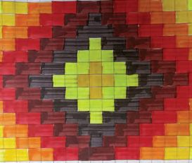
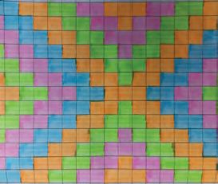
Mathematics Standard - III
What's Left? Teacher had 578 rupees with her. She bought some beads from the school store to make an abacus. She gave 4 hundred rupee notes, 6 ten-rupee notes and 5 onerupee notes. How much does she have now? Balance amount
The amount she gave 578 − 465 = 113 Am I right?
465 + 113 = 578 Yes, indeed!
Buying An Abacus Isha bought an abacus for 125 rupees from the school store. She gave 150 rupees. Which notes did she give?
How much did she get back from the store? How did you calculate? Method (1) 125 + 5 = 130 (First she gave 5 rupees) 130 + 20 = 150 (Next, 20 rupees)
Method (4)
5 + 20 = 25 (She gave 25 rupees in total)
Method (2)
Method (3)
150 – 125 150 – 1 = 149
150 – 125 150 – 1 = 149
149 – 125 = 24 24 + 1 = 25
125 – 1 = 124 149 – 124 = 25
100
Number
Hundred
Ten
One
150
1
4
10
125
1
2
5
2
5

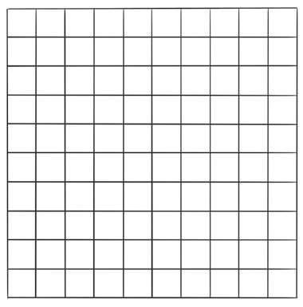
Add or Subtract?
Let's Remove See the pictures:
How many How many ones? tens?
How many hundreds are here?
What's the number? Let's remove 212 squares from this. In the remaining: How many hundreds?
How many tens?
How many ones?
What's the number? 332 − 212 =
Can you subtract 116 from 338 like this? How did you calculate? Write your method here.
101

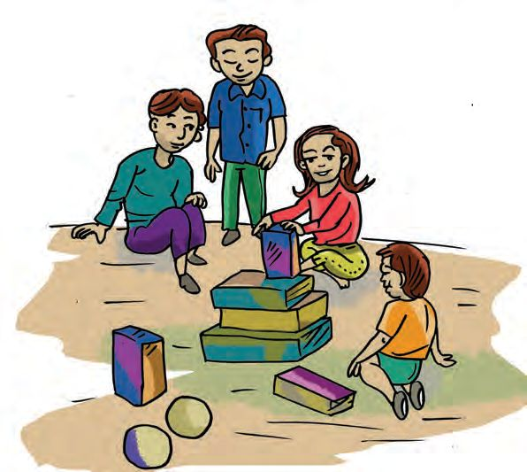
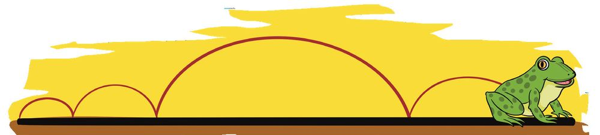
Mathematics Standard - III
What Next?
Add or Subtract? The school society got 642 rupees in two days. 253 rupees was got on the first day. How much did they get on the second day? In what all ways can we calculate? Method (1)
42
40
7 253
300
260
600
300
642
7 + 40 + 300 + 42 = 389
Method (2) 253 + 47 = 300
Method (3)
Number Hundred
Ten
One
300 + 342 = 642
642
5
13
12
342 + 47 = 389
253
2
5
3
3
8
9
102

Add or Subtract?
What's the Price? Susha had 572 rupees with her. After buying some beads and an abacus, she had 394 rupees left. What's the price of beads and abacus? What I understood from the question:
What I must do to calculate the answer:
My method: Answer I got
Friends' method:
103

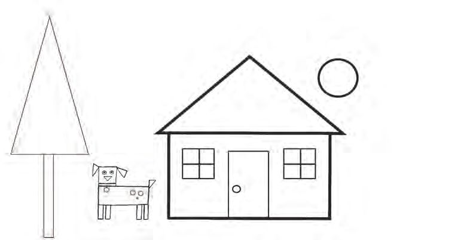
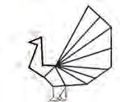
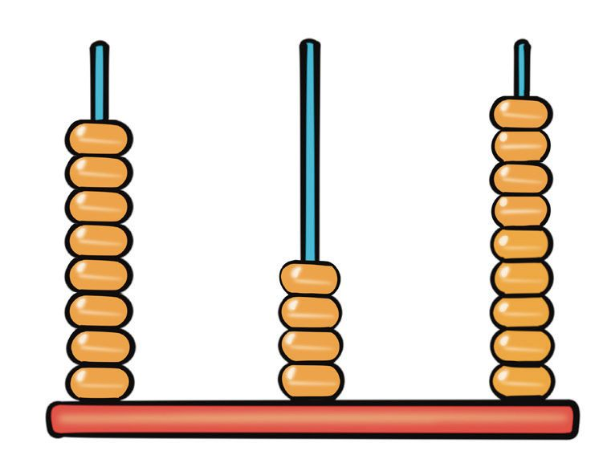
Mathematics Standard - III
What's the Difference? Isha and susha are playing with their abacuses. What number did you make, Susha?
Hundred Ten
Hundred Ten
One
Number on the abacus
Isha
Who made the larger number? What's the difference of the numbers?
Susha
My number is 948
Hundred
Ten
One
I changed it to 849
One
Hundred
104
Ten
One

Add or Subtract?
Look at the abacus What are the changes in the number of beads? Hundred : 1 less Ten : No change One : 1 more
100 less and 1 more together means 99 less.
What's the difference, when 948 is changed to 849? See the other pairs they have found. Can you calculate the differences? 635, 536
423, 324
746, 647
.........
.........
.........
Look at the answers. What did you find out?
What about these pairs? What is the difference? 896, 698
634, 436
.........
.........
What did you find out?
105

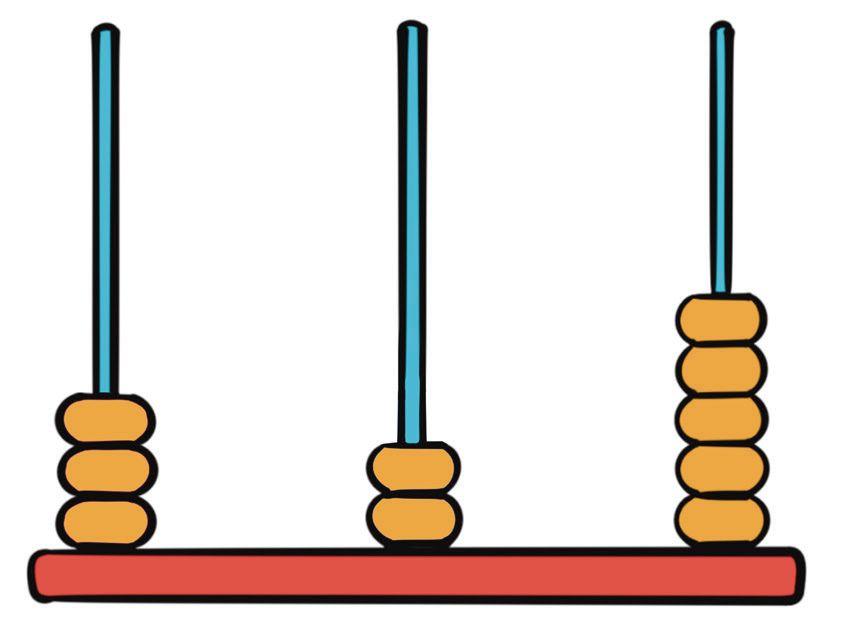

Mathematics Standard - III
Big Numbers and Small Numbers • Write three consecutive digits. • Using all the three write the largest and the smallest numbers without repetition.
• Calculate their difference. Digits
Largest Number
Smallest number
321
123
1, 2, 3
Difference
2, 3, 4 3, ......., ....... ......., ......., 6 ......., ......., ....... 6, ......., .......
Look at the difference What did you find out?
Changing Positions What's the number on the abacus?
Take one bead from the hundred's place and put it in the ten's place What's the number now? One 100 less and one 10 more
106


Add or Subtract?
What's the difference of the two numbers? Write how you calculated
A Trip Isha's family is getting ready for a trip. They went to a shop to buy bags.
Price of blue bag
Price of red bag
How much more is the price of the red bag? How I calculated
How my friends' calculated
107


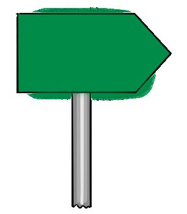
Mathematics Standard - III
To Madakara They started the next day. They travelled in a car. Isha wrote down the last three digits of the meter at the start. Isha wrote
568
After 19 kilometres, they saw a sign board. What is the distance from Isha's home to Madakara? After some time, they saw another sign board. How far did they travel?
Madakara 147 km
Madakara 98 km
Write the last three digits of the meter when they reached Madakara. What I understood from the question:
How I calculated:
They went to a hotel for lunch. Her mother paid the bill. It was 578 rupees. Earlier, she had spent 175 rupees on tea and snacks. She had 968 rupees when they started. How much does she have now? How I calculated:
108


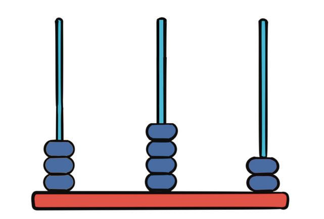
Add or Subtract?
Assessment 1. Let's Draw an Abacus
To make the number 101, how many beads must we remove? Hundred
Ten
One
Hundred Ten One Draw an abacus showing 101
109

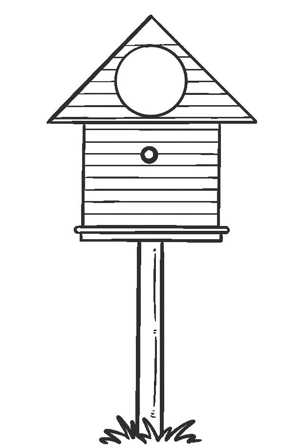
Mathematics Standard - III
2. Beehives
110

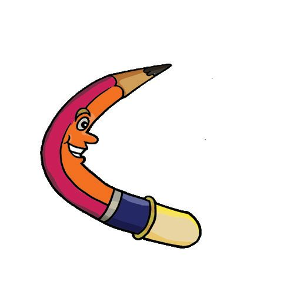

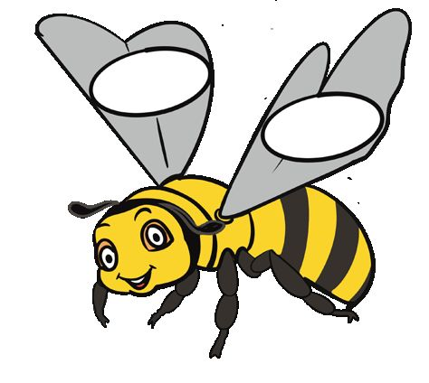
Add or Subtract?
Can you help the queen bee to find her hive? 568
243
324
759 695
To find the hive
Subtract each number on the bee from each number on the flower. Write the answers on the hives, from the smallest to the largest.
Queen bee's hive Sum of digits is 10 One digit repeated
Find the hive and colour it.
3. Add to Subtract 500 400
300
325 900
245
750 250
900
750
314
435
128
869
178 961
208
210
869
961
111

Mathematics Standard - III
4. Calculate and Fill the Cells 1
2
3
4
5
6
7
8
9
1.
4 subtracted from 300
2.
12 added to 200
3.
136 + 136
4.
264 subtracted from 500
5.
100 + 160
6.
400 − 116
7.
399 − 151
8.
8 added to 300
9.
524 − 300
Filled the Cells?
Add the three numbers in the first row.
Add the three numbers in the second row.
What if we add the three numbers in the first column?
Any peculiarity in the sums?
Check the other rows and columns.
Are all the sums the same?
Can you make other squares like this?
112